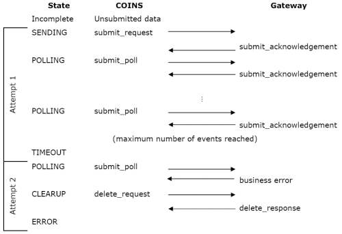

CIS Scheme - Submission Protocol
A submission involves sending data to HMRC via the Government Gateway, and receiving a response that HMRC has processed that data. A submission may involve one or more attempts; HMRC may not process the data immediately, so an attempt can time out, in which case makes a new attempt. As part of a submission attempt, sends messages to the Government Gateway and for each message sent, receives a message in reply: this is an event.
The protocol always starts with sending data. This event is called the 'submit_request'. Once has sent this message the state is SENDING.
The most likely response to the submit_request is a submit_acknowledgement, which tells that the gateway has received the data but has not finished processing it yet. This response puts in the POLLING state, meaning will start to poll the gateway. when polling, sends submit_poll messages, asking the gateway for an update.
continues to poll the gateway until the gateway responds that the data has been processed successfully, or the gateway responds with an error, or the maximum number of polls (set by the SCUK parameter POLLMAX) has been reached. If the maximum number of polls has been reached, the state is set to TIMEOUT, and generates a new attempt which will start automatically after a set interval (specified by the SCUK parameter POLLNEXT).
If the submission is successful receives a submit_response, otherwise the reply is a submit_error. There are three types of error:
- Recoverable: a transmission error occurred, this asks for the previous message to be resent.
- Business: the submission failed validation. checks the submission using the same validation rules, before you are allowed to send the submission. Therefore this error is only possible if there is a fault in (such as producing incorrect XML) or the gateway.
- Fatal: an error in the protocol handling by or problems at the gateway.
Once has been given a response by the gateway that shows that the data has been processed, then enters the CLEARUP state and sends delete_request messages. This message lets the gateway know that it no longer needs to store your data. Note that the gateway acts as a middleman between yourself and HMRC, so deleting the gateway data does not delete HMRC's copy.
There are two possible responses to the delete_request: A delete_acknowledgement means the data hasn?t been deleted yet and another delete_request should be sent. A delete_response ends the submission attempt.
The final state of the submission attempt depends on the response to the submission: If the submission has been successful the state is COMPLETE. If there were business logic errors it will be ERROR. If there was a fatal error it will be FAILED.
Below is an example of a submission which required two attempts:
